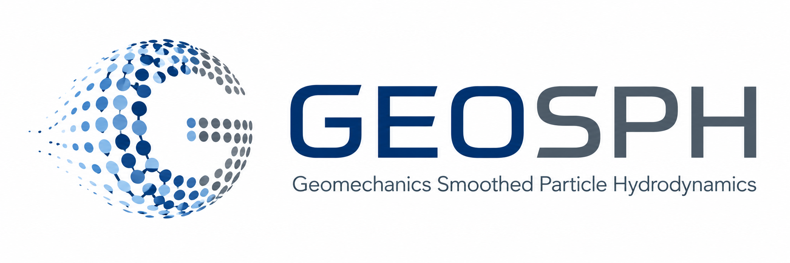

Constitutive modeling
Drucker–Prager, Mohr–Coulomb, and Von Mises yield criteria.
Research software for computational geomechanics
GEOSPH is a research framework built on PySPH for developing, testing, and applying meshfree numerical formulations to geotechnical engineering problems.
First public release · Version 1.0.0 · July 2026

About
GEOSPH was originally developed by Dr. Alomir Favero as part of his doctoral research at Stanford University. The framework extends PySPH with constitutive models, boundary formulations, particle-shifting methods, and other capabilities developed for computational geomechanics.
The project is maintained as part of ongoing research at Bucknell University and has benefited from documented project-specific contributions by collaborators and students.
Version 1.0.0
Drucker–Prager, Mohr–Coulomb, and Von Mises yield criteria.
Single-phase SPH simulations for large-deformation solid mechanics.
Particle-shifting approaches for maintaining numerical quality.
Slip-free and no-slip boundary-condition formulations.
Citation
If GEOSPH contributes to your research, please cite the archived software release:
Contact
For questions about GEOSPH, its use, or potential research collaborations, contact Dr. Alomir Favero at alomir.favero@bucknell.edu.